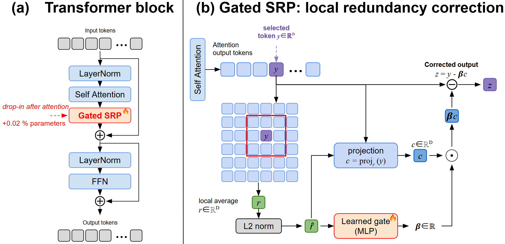
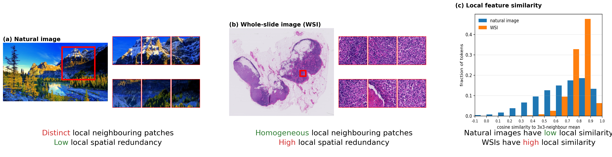
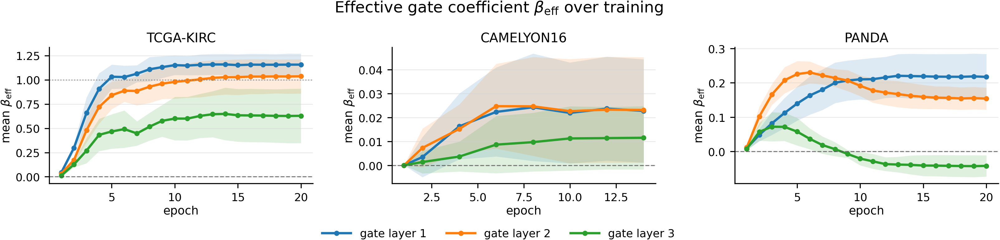
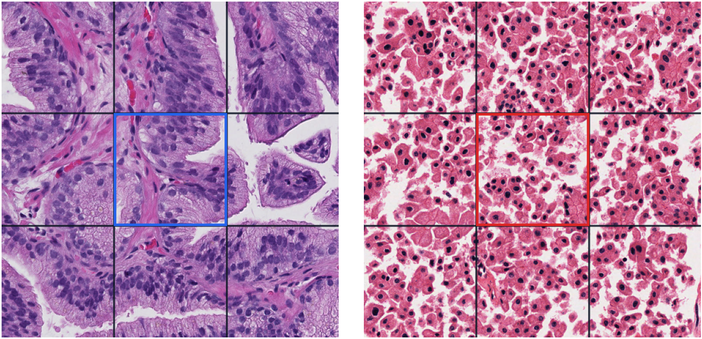

GatedSRP
Gated Spatial Redundancy Projection for Pathology Transformer Attentions
A lightweight signed correction that adapts patch-token attention updates to their local tissue context.

How GatedSRP works
Nearby WSI patches often repeat the same tissue pattern. GatedSRP separates that shared local component from the attention update, then learns whether it should be reduced, retained, or reinforced.

Local reference. For each patch token, GatedSRP averages the detached value vectors in its valid 3x3 neighborhood and normalizes the result into a local tissue-redundancy axis, r̂ᵢ = normalize(meanj∈N(i) vⱼ).
Adaptive signed correction. A token- and head-specific gate predicts βᵢ = δ tanh(gᵢ) and updates the attention contribution as zᵢ = yᵢ − βᵢ ⟨yᵢ, r̂ᵢ⟩ r̂ᵢ. A negative β reinforces useful local context, β = 0 preserves the original update, 0 < β ≤ 1 reduces the redundant component, and 1 < β ≤ 2 reflects it beyond full projection. Zero initialization starts from the preserve case.
Results
Five-seed evaluation across survival, classification, MIL models, design choices, and measured resource use.
TCGA overall survival
Case-level C-index, mean across five seeds. GatedSRP improves over the no-adaptation baseline on all five cohorts; the across-cohort paired estimate is +0.0269, 95% CI [0.0148, 0.0389], p = 0.0035.
Green indicates an increase and red a decrease relative to NA.
| Method | KIRC | KIRP | LUAD | STAD | UCEC |
|---|---|---|---|---|---|
| NA | 0.7110 | 0.7247 | 0.5513 | 0.5910 | 0.6756 |
| XSA | 0.7192 | 0.6795 | 0.5359 | 0.6035 | 0.6233 |
| Diff | 0.7241 | 0.7020 | 0.5546 | 0.5847 | 0.6489 |
| GatedSRP | 0.7257 | 0.7648 | 0.5832 | 0.6171 | 0.6973 |
WSI classification
Selected task metric, mean across five seeds. GatedSRP improves over the no-adaptation baseline on four of five datasets and on 12 of 16 reported classification metrics.
Green and red follow the meaningful changes reported relative to NA in the paper.
| Method | CAM16 F1 | CAM17 F1 | KGH F1 | PANDA kappa | BRACS F1 |
|---|---|---|---|---|---|
| NA | .9731 | .7836 | .8297 | .8822 | .4179 |
| XSA | .9730 | .7342 | .8469 | .8811 | .4328 |
| Diff | .9923 | .7578 | .8471 | .8826 | .3874 |
| GatedSRP | .9808 | .7785 | .8544 | .8842 | .4424 |
The selected metric improves over NA on four datasets; CAMELYON17 is the exception. Per-seed values and all task metrics are included in the repository.
MIL survival models
Case-level C-index across selected public TCGA cohorts.
| Method | KIRP | LUAD | STAD | UCEC |
|---|---|---|---|---|
| ABMIL | .7224 | .5553 | .5905 | .6529 |
| DSMIL | .7253 | .5780 | .5833 | .6621 |
| Official TransMIL | .7318 | .5422 | .5856 | .6460 |
| GatedSRP | .7648 | .5832 | .6171 | .6973 |
Neighborhood size
The 3x3 neighborhood is best on all six evaluated datasets.
| Dataset | 3x3 | 5x5 | 7x7 |
|---|---|---|---|
| KIRP | .7648 | .7368 | .7275 |
| LUAD | .5832 | .5633 | .5763 |
| STAD | .6171 | .5861 | .5694 |
| KGH | .8544 | .8429 | .8312 |
| PANDA | .8842 | .8720 | .8787 |
| BRACS | .4424 | .4209 | .4210 |
Coefficient parameterization
Fixed signed range versus direct soft-clipped β = 2 tanh(g/2).
| Dataset | Fixed | Direct β |
|---|---|---|
| KIRP | .7648 | .7582 |
| LUAD | .5832 | .5619 |
| STAD | .6171 | .5732 |
| KGH | .8544 | .8407 |
| PANDA | .8842 | .8870 |
| BRACS | .4424 | .4239 |
Resource profile
Three-epoch paired profiles. Throughput is in whole slides per second and memory is peak reserved GPU GiB.
| Method | PANDA memory | PANDA train | PANDA test | TCGA-5 mean memory | TCGA-5 mean train |
|---|---|---|---|---|---|
| NA | .47 | 11.806 | 46.588 | 1.80 | 1.910 |
| XSA | .52 | 12.081 | 53.365 | 1.92 | 1.903 |
| Diff | .57 | 7.680 | 33.493 | 2.08 | 1.896 |
| GatedSRP | .49 | 9.790 | 32.962 | 4.69 | 1.925 |
The streaming correction limits PANDA memory, while variable-length TCGA bags produce a higher peak reserved-memory profile.
Learned gate behavior
Most token-level means lie between zero and one, but the model can preserve the original update, apply weak negative correction, or move beyond full projection when the context supports it.



How to use
Add one correction between the patch-token attention update and the residual connection. The attention operator, positional encoding, CLS token, and task head can remain unchanged.
Your model needs three things
- Patch coordinatesBuild a 3x3 graph aligned with the patch-token order.
- Patch attention updatesCorrect patch tokens only; special tokens pass through unchanged.
- A pre-residual insertion pointApply GatedSRP after attention and train normally from its identity initialization.
import torch
from slide_level_srp.src.srp_correction import PatchSRPCorrection
self.gated_srp = PatchSRPCorrection(
dim, hidden_dim=32, delta_scale=2.0,
)
update = self.attn(self.norm(x))
patches = self.gated_srp(
update[:, 1:],
neighbor_index,
neighbor_mask,
)
update = torch.cat((update[:, :1], patches), dim=1)
return x + update